本章节将介绍一些IDLE（Python自带的一个代码编辑器）的常见问题，并给出相应的解决方案。
请确保你正确安装了Python 3.4.4，如果安装了多个Python版本，请确保你正在使用的是3.4.4版本。
如果对于Windows11用户，新版右键菜单确实是找不到的
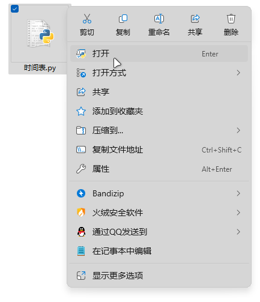
右键菜单没有 “Edit with IDLE” 选项
点击“显示更多选项”
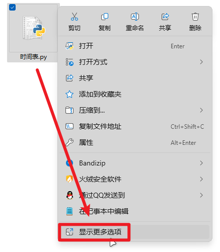
点击“显示更多选项”
或者按住键盘上“Shift”键的同时鼠标右键
然后就打开了完整版的右键菜单，就出现“Edit with IDLE”选项了。
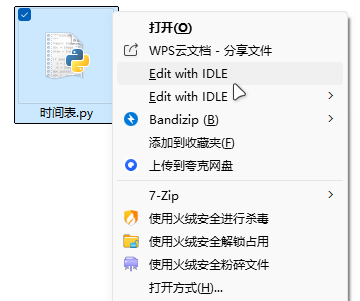
完整版的右键菜单
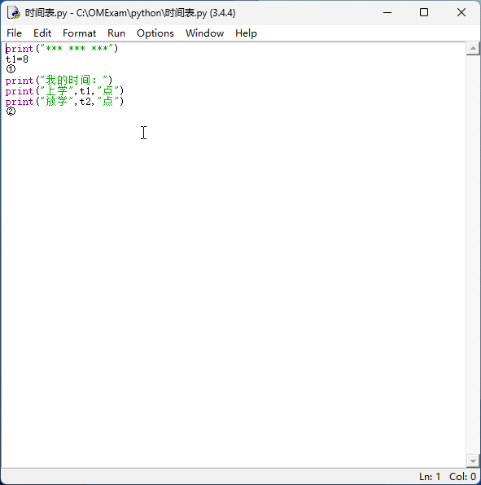
IDLE中字体太小
点击菜单栏中的“Options”（选项），然后点击“Configure IDLE”（配置IDLE）。
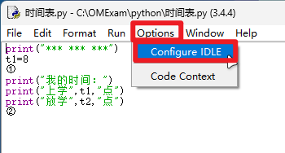
点击菜单栏中的“Tools”-“Options”
然后在“Fonts/Tabs”（字体/选项卡）选项卡中，将“Size”（大小）调大一些（推荐调到16）。
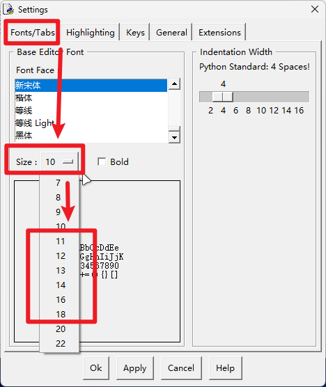
调整字体大小
然后点击“Apply”（应用），再点击旁边的“OK”（确定），关闭设置窗口。
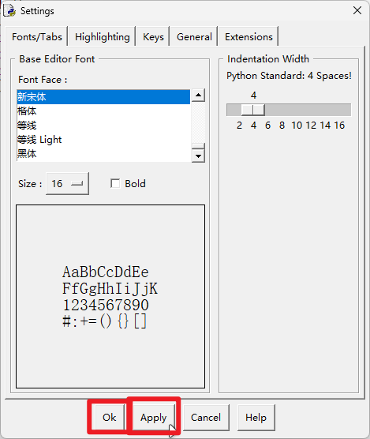
应用并确定
这样就解决了IDLE中字体太小的问题。
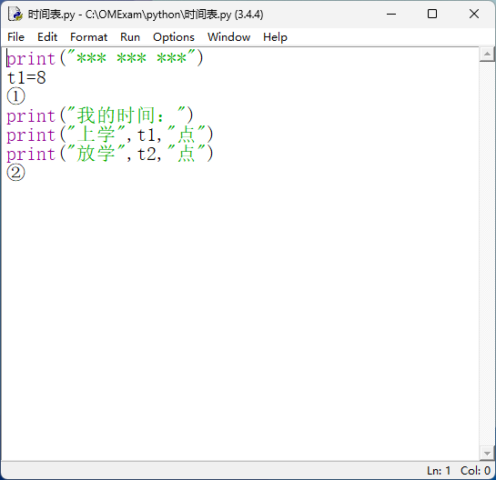
IDLE中字体大小正常
请先确保你的代码文件已保存
菜单栏“File”（文件）- “Save”（保存）
或者键盘快捷键Ctrl+S
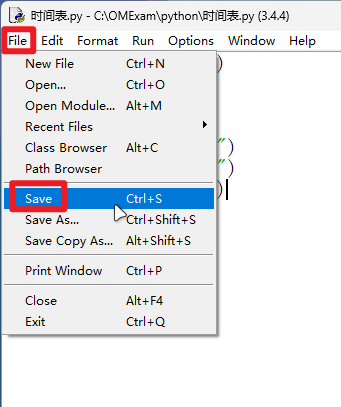
请先保存代码文件（或者键盘快捷键Ctrl+S）
点击菜单栏中的“Run”（运行），然后点击“Run Module”（运行模块）。
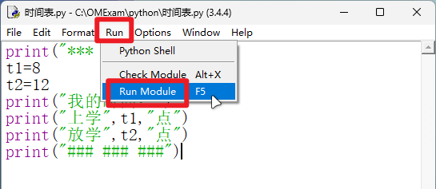
点击“Run Module”
或者直接按下快捷键F5也可以。
运行成功后，IDLE会弹出一个终端窗口，运行代码。
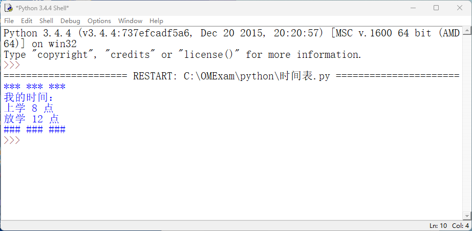
运行代码
这样运行的好处就是，即使代码有错误，也不会立马关闭窗口，可以分析错误原因。
还有一种方法就是直接用系统自带的命令提示符（cmd）运行代码，但是这个涉及到配置环境变量等复杂操作，故不做讲解。
（本章节结束）[下一章节]